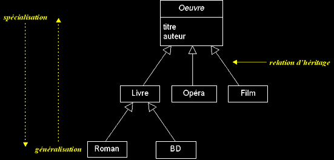

|
|
|
Les vues statiques d'UML (suite...)
DIAGRAMME DE CLASSES (suite...)
q
Héritage
Les hiérarchies de classes permettent de gérer la complexité, en ordonnant les objets au sein d'arborescences de classes, d'abstraction croissante.
- Spécialisation
- Généralisation
- Classification
- L'héritage (spécialisation et généralisation) permet la classification des objets.
- Une bonne classification est stable et extensible : ne classifiez pas les objets selon des critères instables (selon ce qui caractérise leur état) ou trop vagues (car cela génère trop de sous-classes).
- Les critères de classification sont subjectifs.
- Le principe de substitution (Liksow, 1987) permet de déterminer si une relation d'héritage est bien employée pour la classification :
"Il doit être possible de substituer n'importe quel instance d'une super-classe, par n'importe quel instance d'une de ses sous-classes, sans que la sémantique d'un programme écrit dans les termes de la super-classe n'en soit affectée."- Si Y hérite de X, cela signifie que "Y est une sorte de X" (analogies entre classification et théorie des ensembles).

q Agrégation
- L'agrégation est une association non symétrique, qui exprime un couplage fort et une relation de subordination.
Elle représente une relation de type "ensemble / élément".
- UML ne définit pas ce qu'est une relation de type "ensemble / élément", mais il permet cependant d'exprimer cette vue subjective de manière explicite.
- Une agrégation peut notamment (mais pas nécessairement) exprimer :
- qu'une classe (un "élément") fait partie d'une autre ("l'agrégat"),
- qu'un changement d'état d'une classe, entraîne un changement d'état d'une autre,
- qu'une action sur une classe, entraîne une action sur une autre.
- A un même moment, une instance d'élément agrégé peut être liée à plusieurs instances d'autres classes (l'élément agrégé peut être partagé).
- Une instance d'élément agrégé peut exister sans agrégat (et inversement) : les cycles de vies de l'agrégat et de ses éléments agrégés peuvent être indépendants.
q Composition
- La composition est une agrégation forte (agrégation par valeur).
- Les cycles de vies des éléments (les "composants") et de l'agrégat sont liés : si l'agrégat est détruit (ou copié), ses composants le sont aussi.
- A un même moment, une instance de composant ne peut être liée qu'à un seul agrégat.
- Les "objets composites" sont des instances de classes composées.
q Agrégation et composition : rappel
- L'agrégation et la composition sont des vues subjectives.
- Lorsqu'on représente (avec UML) qu'une molécule est "composée" d'atomes, on sous-entend que la destruction d'une instance de la classe "Molécule", implique la destruction de ses composants, instances de la classe "Atome" (cf. propriétés de la composition).
- Bien qu'elle ne reflète pas la réalité ("rien ne se perd, rien ne se crée, tout se transforme"), cette abstraction de la réalité nous satisfait si l'objet principal de notre modélisation est la molécule...
- En conclusion, servez vous de l'agrégation et de la composition pour ajouter de la sémantique à vos modèles lorsque cela est pertinent, même si dans la "réalité" de tels liens n'existent pas !
q Interfaces
- Une interface fournit une vue totale ou partielle d'un ensemble de services offerts par une classe, un paquetage ou un composant. Les éléments qui utilisent l'interface peuvent exploiter tout ou partie de l'interface.
- Dans un modèle UML, le symbole "interface" sert à identifier de manière explicite et symbolique les services offerts par un élément et l'utilisation qui en est faite par les autres éléments.
|
|
|